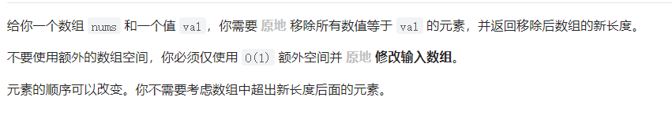
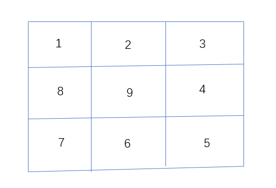

Algorithm
数组
二分查找
二分查找的使用场景：有序数组、无重复元素（一旦有重复，返回的元素下标可能就不唯一）
区间的定义：二分查找一个重要的点就是对于查找区间的定义，是左闭右闭还是左闭右开。并且在查找过程中，区间的定义要保持不变
区间的定义会涉及到在二分过程中的一些细节，例如while(left < right)还是while(left <= right)、是right = middle还是right = middle - 1
左闭右闭的版本
在左闭右闭时：
while(left <= right)中的等号是可以取到的- 当目标元素落在左半边区间时，因为区间右边是取得到的，且已经判断目标元素小于右边界，所以
right = middle - 1
1 | /** |
左闭右开的版本
在左闭右开时：
- 在while循环时，显然left不可能有等于right的情况
- 当目标元素落在左半边区间时，因为右边界是开区间，
right = middle是正好的，如果是right =middle - 1反而会漏掉右边界的前一个元素
1 | /** |
数组的双指针法

本题的一种方法是暴力解法，使用两个for循环，一个for遍历数组，一个for更新数组。这种方法的时间复杂度是O(n^2)
场景一
双指针法
双指针法就是定义两个指针，在一个for循环中完成两个for循环的事情。
- fast指针：它用来查找数组中的元素是否等于目标元素
- slow指针：它用于更新数组
1 | /** |
场景二
给你一个按 非递减顺序 排序的整数数组 nums，返回 每个数字的平方 组成的新数组，要求也按 非递减顺序 排序。
示例： 输入：nums = [-4,-1,0,3,10] 输出：[0,1,9,16,100] 解释：平方后，数组变为 [16,1,0,9,100]，排序后，数组变为 [0,1,9,16,100]
分析：由于它也算是一个有序的数组，可以发现较大值只可能出现在头和尾，中间一定是较小值
思路：可以定义两个指针，一个在数组的开始，一个在数组的结尾。比较两个指针所在元素平方后的大小，较大的元素放到一个新数组的末尾，然后较大元素所在的指针向前或后移动，直至两指针相遇
1 | /** |
场景三
给你一个整数数组 nums ，判断是否存在三元组 [nums[i], nums[j], nums[k]] 满足 i != j、i != k 且 j != k ，同时还满足 nums[i] + nums[j] + nums[k] == 0 。请你返回所有和为 0 且不重复的三元组。
示例： 输入：nums = [-1,0,1,2,-1,-4] 输出：[[-1,-1,2],[-1,0,1]]
本题的难点在于去重
思路：
- 首先对数组进行升序排序，方便之后的操作，如果排序后的数组的第一个元素就大于0，那么这个数组就不存在三数和为0
- 进行一次for循环，i从数组的第一个元素开始，同时定义两个指针，left指针指向i+1，right指针指向数组末尾
- 然后依次在数组中寻找三数和为0的情况
- 如果发现三数和大于0，那么right指针前移；如果三数和小于0，那么left指针后移，同时保持left < right
去重操作：
- 去重主要考虑
nums[i]、nums[left]、nums[right] - 如果nums[i]重复了，就很有可能导致最后的三元组发生重复，所以要判断
nums[i] === nums[i-1] - left重复时，直接left++，跳过重复的元素；同理right重复时，right–，跳过重复的元素
1 | function ThreeSumArr(nums) { |
螺旋矩阵
给定一个正整数 n，生成一个包含 1 到 n^2 所有元素，且元素按顺时针顺序螺旋排列的正方形矩阵。
示例:
输入: 3 输出: [ [ 1, 2, 3 ], [ 8, 9, 4 ], [ 7, 6, 5 ] ]
这道题并没有考察什么特定的算法，就是一个矩阵的模拟过程
最重要的一点：
与二分法类似，这里把握住循环不变量是一个很重要的点
此处的循环不变量就在于，四个角落处的位置归属问题，也就是每一行或列的区间

上面的图中，我们可能会：
- 先填入1-3所在的位置，此时走的是[1, 3]
- 然后填入4-5所在的位置，此时走的是(3, 5]
- 然后填入6-7所在的位置，此时走的是(5, 7]
- 然后填入8所在的位置，此时走的是(7, 8]
可以发现，由于没有控制好对于每个角落位置的归属问题，导致了程序很复杂
确定循环不变量：我们就规定每一行或列都是左闭右开的形式，也就是说将这一行（或列）最后的位置作为下一列（或行）的起始位置
1 | function generateMatrix(n) { |
哈希表
两数之和
给定一个整数数组 nums 和一个整数目标值 target，请你在该数组中找出 和为目标值 target 的那 两个 整数，并返回它们的数组下标。
你可以假设每种输入只会对应一个答案。但是，数组中同一个元素在答案里不能重复出现。你可以按任意顺序返回答案。
示例：
输入：nums = [2, 7, 11, 15], target = 9 输出：[0, 1]
首先，可以直接用两个for循环暴力操作，时间复杂度为O(n^2)
这个题目可以使用哈希法来操作
但是需要想清楚以下几个问题：
- 什么时候使用哈希表
- 为什么要使用哈希表来做
- 用数组、set还是map来实现哈希表
- 如果使用map，其中的key、value又是什么
什么时候使用哈希表：当我们要查询一个元素是否出现过，或者一个元素是否在集合中出现，要想到使用哈希表
对于本题来说，我们需要记录已经查询过的元素，并且要使用到元素的值以及下标，所以set显然不合适。而数组的大小受限，当哈希值较大数据较少时，会浪费空间。综上所述，本题我们使用map来实现哈希表，key为元素值。value为元素下标
1 | function twoSum(nums, target) { |
四数相加
给定四个包含整数的数组列表 A , B , C , D ,计算有多少个元组 (i, j, k, l) ，使得 A[i] + B[j] + C[k] + D[l] = 0。
为了使问题简单化，所有的 A, B, C, D 具有相同的长度 N，且 0 ≤ N ≤ 500 。所有整数的范围在 -2^28 到 2^28 - 1 之间，最终结果不会超过 2^31 - 1 。
示例：
输入：A = [1, 2], B = [-2, -1], C = [-1, 2], D = [0, 2] 输出： 2
思路：
- 显然可以使用map来实现哈希表
- 先遍历A，B两个数组，统计两个数组的元素之和，以及每个和出现的次数
- 再遍历C，D两个数组，找到如果
0-(c+d)在map中出现过的话，就用count把map中key对于的value（也就是出现的次数）统计起来
1 | function fourSumCount(arr1, arr2, arr3, arr4) { |
最后
学习资源来自代码随想录